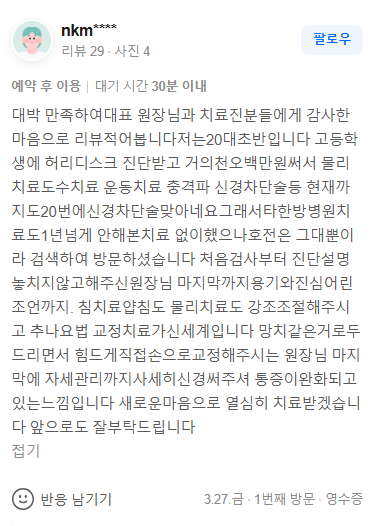

治疗案例 (nkm**** 用户在Naver上的真实收据评论原文)
"大赞，特别满意！怀着对代表院长和治疗团队的感恩之心写下这条评价。我今年刚20岁出头，高中时被诊断出腰椎间盘突出，到现在花了差不多一千五百万韩元，做过物理治疗、徒手治疗、运动治疗、冲击波、神经阻滞术等，光是神经阻滞术就打了20次。之前在其他韩医院也治了一年多，能试的治疗全试遍了，但每次都是当时好一下很快就复发，所以上网搜索后找到了这里。从第一次检查开始，院长就非常细致地为我讲解诊断结果，毫无遗漏，直到最后还给我鼓励和真诚的建议。针灸、药针和理疗的强度都调节得很合适，这里的推拿疗法（Chuna）矫正治疗简直打开了新世界的大门！院长用像小锤子一样的工具敲击，还亲自用手费力地帮我做矫正，最后连平时的姿势管理都仔细交待叮嘱。现在真的能感觉到疼痛在缓解。我会带着崭新的心情好好配合治疗的！以后也请多多关照。"

1. 慢性腰椎间盘突出的反复发作，是脊椎节段间空间狭窄的物理性问题。
2. 注射或单纯的肌筋膜松解推拿，在解除已僵硬的深层脊椎体固着方面存在局限。
3. Bodyall通过SART脊椎排列恢复术（空间脊椎矫正），从根本上降低椎间盘内部的压力。
腰椎间盘突出（椎间盘脱出症）患者常陷入的误区是，即使在注射治疗或普通徒手治疗上花费了高昂的费用，却未能实现根本性的结构改善。神经阻滞术只是冲洗掉神经周围的炎症性化学物质并进行暂时性阻断，并不能物理性地消除压迫椎间盘的脊椎体之间的轴向压迫（Axial Compression）。如果无法确保骨与骨之间绝对的“空间”，椎间盘就会不断向外突出并持续刺激神经根。
一般的肌筋膜松解推拿虽然能缓解表层肌肉的紧张并诱发暂时的关节弹响（推拿手法），但由于长期的挛缩，深层韧带和固着的脊椎节段已经像石头一样僵硬，此时所施加的作用力矢量深度不足以将它们分离开来。
Bodyall韩医院的SART脊椎排列恢复术是一种全面重新调整人体中心轴——骨盆和腰椎、胸椎排列的正骨矫正手法。特别是结合了能够精准打击手部无法触及的深层脊椎节段位移的矫正工具（锤击机制 Hammering Mechanism），从而能够瞬间恢复物理排列。通过这种方式，脊椎节段间距被打开，椎间盘内部压力转化为负压，从而达到生物力学上的减压效果。
• 骨打及正骨推拿疗法：纠正崩溃的脊椎垂直轴，物理性地扩张变窄的椎间盘空间，从而从源头上阻断神经压迫。
• 结构性姿态再教育：指导患者进行个性化的骨盆及腰椎稳定训练，防止治疗后排列再次错位。
• 高浓度蜂毒药针 & 精制药针：迅速抑制椎间盘突出部位的严重神经炎症，促进损伤神经根的恢复。
• 定制脊椎韩药治疗：强健变脆弱的椎间盘周围韧带与骨骼组织，长期维持结构稳定性。